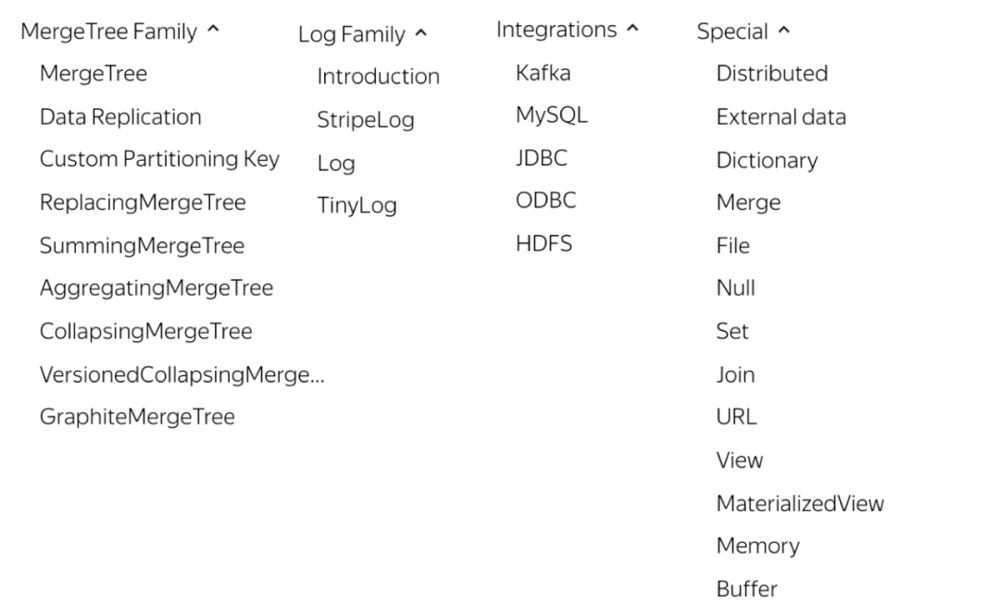
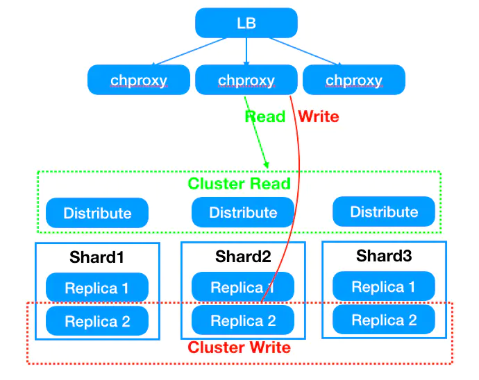
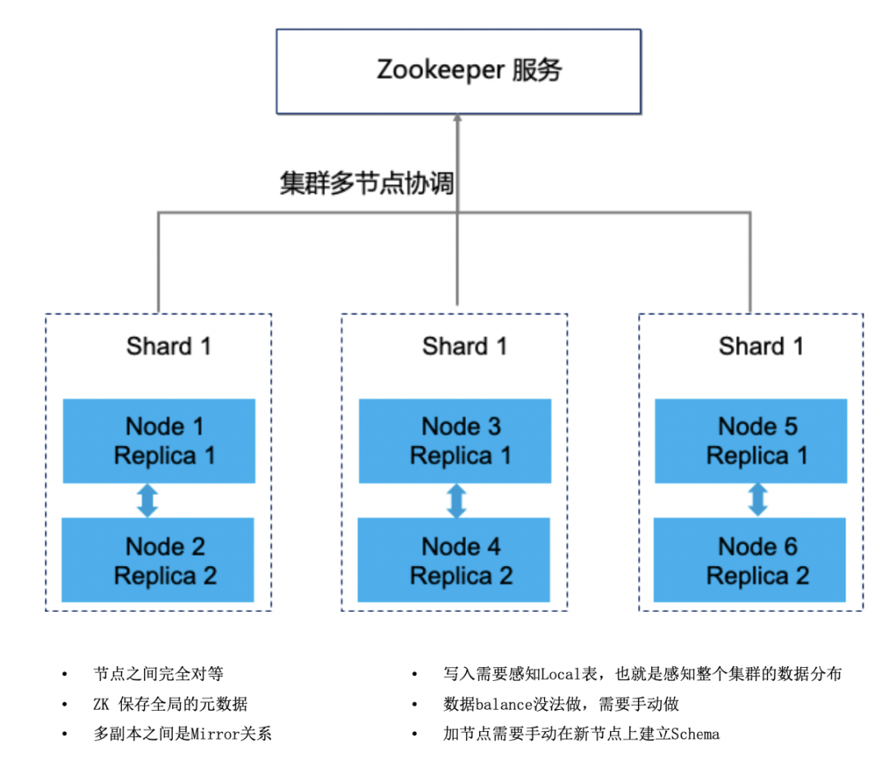

导读：
ClickHouse作为一款开源列式数据库管理系统（DBMS）近年来备受关注，主要用于数据分析（OLAP）领域。作者根据以往经验和遇到的问题，总结出一些基本的开发和使用规范，以供使用者参考。
随着公司业务数据量日益增长，数据处理场景日趋复杂，急需一种具有高可用性和高性能的数据库来支持业务发展，ClickHouse是俄罗斯的搜索公司Yandex开源的MPP架构的分析引擎，号称比事务数据库快100-1000倍，最大的特色是高性能的向量化执行引擎，而且功能丰富、可靠性高。
在过去的一年中，杭研DBA团队已经支撑网易集团内部多个事业部上线使用，集群规模共计十几套，CPU近3000核，每日近千亿数据入库，千亿级别表查询可在秒级完成，大大提升了业务原有OLAP架构的效能，覆盖的业务场景包括：用户行为日志分析，进行PV、UV、留存、转化漏斗和操作，包括游戏反外挂数据统计分析；用户画像，人群圈定和问卷投放；AB实验数据的实时计算与分析；机器和业务日志的分析、监控、查询等。
ClickHouse应用场景
1. 写在前面
（1）如果你的业务预算或机器资源有限，强烈不推荐使用clickhouse，因为这套架构成本比较高。
（2）最小集群部署所需机器：ck节点需要2台256G内存/40c cpu物理机，磁盘使用SSD，加上3台zookeeper和2台chproxy应用主机或者云主机。
（3）Clickhouse自带了丰富的功能来应对复杂的业务场景和大数据量，所以在使用期间需要运维和开发侧都投入人力对这些功能(表引擎类型)学习和掌握。
2. 业务在数据层的表现
（1）业务大多数是读请求，存储宽表，无大字段，较少的并发(单台100-200qps左右)。
（2）数据批写入（1000条以上，线上业务建议5w-10w），不修改或少修改已添加的数据。
（3）无事务要求，对数据一致性要求低。
（4）对于简单查询，允许延迟大约50毫秒，每一个查询除了一个大表外都很小。
（5）处理单个查询时需要高吞吐量（每个服务器每秒高达数十亿行）。
3.具体业务场景
（1）用户行为分析，精细化运营分析：日活，留存率分析，路径分析，有序漏斗转化率分析，Session分析等；
（2）实时日志分析，监控分析；
（3）实时数仓。
表引擎选择
ClickHouse表引擎一共分为四个系列，分别是Log、MergeTree、Integration、Special。其中包含了两种特殊的表引擎Replicated、Distributed，功能上与其他表引擎正交，目前业务上主要使用MergeTree系列，配合使用Mview和Distributed引擎。

ClickHouse 包含以下几种常用的引擎类型：
MergeTree 引擎：该系列引擎是执行高负载任务的最通用和最强大的表引擎，它们的特点是可以快速插入数据以及进行后续的数据处理。该系列引擎还同时支持数据复制（使用Replicated的引擎版本），分区 (partition) 以及一些其它引擎不支持的额外功能。
Log 引擎：该系列引擎是具有最小功能的轻量级引擎。当你需要快速写入许多小表（最多约有100万行）并在后续任务中整体读取它们时使用该系列引擎是最有效的。
集成引擎：该系列引擎是与其它数据存储以及处理系统集成的引擎，如 Kafka，MySQL 以及 HDFS 等，使用该系列引擎可以直接与其它系统进行交互，但也会有一定的限制，如确有需要，可以尝试一下。
特殊引擎：该系列引擎主要用于一些特定的功能，如 Distributed 用于分布式查询，MaterializedView 用来聚合数据，以及 Dictionary 用来查询字典数据等。
在所有的表引擎中，最为核心的当属MergeTree系列表引擎，这些表引擎拥有最为强大的性能和最广泛的使用场合。对于非MergeTree系列的其他引擎而言，主要用于特殊用途，场景相对有限。而MergeTree系列表引擎是官方主推的存储引擎，支持几乎所有ClickHouse核心功能，下面主要介绍MergeTree系列表引擎：
1. MergeTree表引擎
MergeTree在写入一批数据时，数据总会以数据片段的形式写入磁盘，且数据片段不可修改。为了避免片段过多，ClickHouse会通过后台线程，定期合并这些数据片段，属于相同分区的数据片段会被合成一个新的片段。这种数据片段往复合并的特点，也正是合并树名称的由来。
MergeTree作为家族系列最基础的表引擎，主要有以下特点：
存储的数据按照主键排序：允许创建稀疏索引，从而加快数据查询速度
支持分区，可以通过PRIMARY KEY语句指定分区字段。
支持数据副本
支持数据采样
建表语法：
CREATE TABLE [IF NOT EXISTS] [db.]table_name [ON CLUSTER cluster]( name1 [type1] [DEFAULT|MATERIALIZED|ALIAS expr1] [TTL expr1],name2 [type2] [DEFAULT|MATERIALIZED|ALIAS expr2] [TTL expr2],...INDEX index_name1 expr1 TYPE type1(...) GRANULARITY value1,INDEX index_name2 expr2 TYPE type2(...) GRANULARITY value2) ENGINE = MergeTree()ORDER BY expr[PARTITION BY expr][PRIMARY KEY expr][SAMPLE BY expr][TTL expr [DELETE|TO DISK 'xxx'|TO VOLUME 'xxx'], ...][SETTINGS name=value, ...]
ENGINE：ENGINE = MergeTree()，MergeTree引擎没有参数
ORDER BY：排序字段。比如ORDER BY (Col1, Col2)，值得注意的是，如果没有指定主键，默认情况下 sorting key(排序字段)即为主键。如果不需要排序，则可以使用ORDER BY tuple()语法，这样的话，创建的表也就不包含主键。这种情况下，ClickHouse会按照插入的顺序存储数据。必选。
PARTITION BY：分区字段，强烈建议指定。
PRIMARY KEY：指定主键，如果排序字段与主键不一致，可以单独指定主键字段。否则默认主键是排序字段。可选。
SAMPLE BY：采样字段，如果指定了该字段，那么主键中也必须包含该字段。比如SAMPLE BY intHash32(UserID) ORDER BY (CounterID, EventDate, intHash32(UserID))。可选。
TTL：数据的存活时间。在MergeTree中，可以为某个列字段或整张表设置TTL。当时间到达时，如果是列字段级别的TTL，则会删除这一列的数据；如果是表级别的TTL，则会删除整张表的数据。大表强烈建议指定。
SETTINGS：额外的参数配置。一般设置index_granularity=8192 ，可选。
2. ReplicatedMergeTree表引
ReplicatedMergeTree使得以上 MergeTree 家族拥有副本机制，保证高可用，用于生产环境，对于大数据量的表来说不推荐使用，因为副本是基于zk做数据同步的，大数据量会对zk造成巨大压力，成为整个ck整个集群瓶颈。业务可以根据数据重要程度在性能和数据副本之间做选择。
建表示例：
CREATE TABLE [IF NOT EXISTS] [db.]table_name [ON CLUSTER cluster](`id` Int64, `ymd` Int64)ENGINE = ReplicatedMergeTree('/clickhouse/tables/replicated/{shard}/test', '{replica}')PARTITION BY ymdORDER BY id
/clickhouse/tables/ 这一部分指定的是在ZK上创建的路径地址，可随意变换只要记得即可
{shard} 指的是分片的标志，同一个分片内的所有机器应该保持相同。建议使用使用的是集群名+分片名的配置也就是{layer}-{shard}，这里的数据就是在macros中配置的属性
test 建议使用表名称
{replica} 参数建议在macros配置成机器的hostname，因为每台机器的hostname都是不一样的，因此就能确保每个表的识别符都是唯一的了
3. ReplacingMergeTree表引
上文提到MergeTree表引擎无法对相同主键的数据进行去重，ClickHouse提供了ReplacingMergeTree引擎，可以针对相同主键的数据进行去重，它能够在合并分区时删除重复的数据。值得注意的是，ReplacingMergeTree只是在一定程度上解决了数据重复问题，但是并不能完全保障数据不重复。
建表语法：
CREATE TABLE [IF NOT EXISTS] [db.]table_name [ON CLUSTER cluster]( name1 [type1] [DEFAULT|MATERIALIZED|ALIAS expr1],name2 [type2] [DEFAULT|MATERIALIZED|ALIAS expr2],...) ENGINE = ReplacingMergeTree([ver])[PARTITION BY expr][ORDER BY expr][PRIMARY KEY expr][SAMPLE BY expr][SETTINGS name=value, ...]
[ver]：可选参数，列的版本，可以是UInt、Date或者DateTime类型的字段作为版本号。该参数决定了数据去重的方式。
当没有指定[ver]参数时，保留最新的数据；如果指定了具体的值，保留最大的版本数据。
注意点：
（1）去重规则
ReplacingMergeTree是支持对数据去重的，去除重复数据时，是以ORDERBY排序键为基准的，而不是PRIMARY KEY。
（2）何时删除重复数据
在执行分区合并时，会触发删除重复数据。optimize的合并操作是在后台执行的，无法预测具体执行时间点，除非是手动执行。
（3）不同分区的重复数据不会被去重
ReplacingMergeTree是以分区为单位删除重复数据的。只有在相同的数据分区内重复的数据才可以被删除，而不同数据分区之间的重复数据依然不能被剔除。
4. SummingMergeTree表引
该引擎继承了MergeTree引擎，当合并 SummingMergeTree 表的数据片段时，ClickHouse 会把所有具有相同主键的行合并为一行，该行包含了被合并的行中具有数值数据类型的列的汇总值，即如果存在重复的数据，会对对这些重复的数据进行合并成一条数据，类似于group by的效果。
推荐将该引擎和 MergeTree 一起使用。例如，将完整的数据存储在 MergeTree 表中，并且使用 SummingMergeTree 来存储聚合数据。这种方法可以避免因为使用不正确的主键组合方式而丢失数据。
如果用户只需要查询数据的汇总结果，不关心明细数据，并且数据的汇总条件是预先明确的，即GROUP BY的分组字段是确定的，可以使用该表引擎。
建表语法：
CREATE TABLE [IF NOT EXISTS] [db.]table_name [ON CLUSTER cluster]( name1 [type1] [DEFAULT|MATERIALIZED|ALIAS expr1],name2 [type2] [DEFAULT|MATERIALIZED|ALIAS expr2],...)ENGINE = SummingMergeTree([columns]) -- 指定合并汇总字段[PARTITION BY expr][ORDER BY expr][SAMPLE BY expr][SETTINGS name=value, ...]
注意点：
要保证PRIMARY KEY expr指定的主键是ORDER BY expr 指定字段的前缀，比如
-- 如下情况是允许的：
ORDER BY (A,B,C)PRIMARY KEY A
-- 如下情况会报错：
DB::Exception: Primary key must be a prefix of the sorting keyORDER BY (A,B,C)PRIMARY KEY B
这种强制约束保障了即便在两者定义不同的情况下，主键仍然是排序键的前缀，不会出现索引与数据顺序混乱的问题。
总结：
SummingMergeTree是根据什么对两条数据进行合并的用ORBER BY排序键作为聚合数据的条件Key。即如果排序key是相同的，则会合并成一条数据，并对指定的合并字段进行聚合。
仅对分区内的相同排序key的数据行进行合并以数据分区为单位来聚合数据。当分区合并时，同一数据分区内聚合Key相同的数据会被合并汇总，而不同分区之间的数据则不会被汇总。
如果没有指定聚合字段，会怎么聚合如果没有指定聚合字段，则会按照非主键的数值类型字段进行聚合
对于非汇总字段的数据，该保留哪一条如果两行数据除了排序字段相同，其他的非聚合字段不相同，那么在聚合发生时，会保留最初的那条数据，新插入的数据对应的那个字段值会被舍弃。
5. Aggregatingmergetree表引
该表引擎继承自MergeTree，可以使用 AggregatingMergeTree 表来做增量数据统计聚合。如果要按一组规则来合并减少行数，则使用 AggregatingMergeTree 是合适的。
AggregatingMergeTree是通过预先定义的聚合函数计算数据并通过二进制的格式存入表内。与SummingMergeTree的区别在于：SummingMergeTree对非主键列进行sum聚合，而AggregatingMergeTree则可以指定各种聚合函数。
建表语法：
CREATE TABLE [IF NOT EXISTS] [db.]table_name [ON CLUSTER cluster]( name1 [type1] [DEFAULT|MATERIALIZED|ALIAS expr1],name2 [type2] [DEFAULT|MATERIALIZED|ALIAS expr2],...)ENGINE = AggregatingMergeTree()[PARTITION BY expr][ORDER BY expr][SAMPLE BY expr][SETTINGS name=value, ...]
6. 其他特殊的表引
Distributed表引擎
Distributed表引擎是分布式表的代名词，它自身不存储任何数据，数据都分散存储在某一个分片上，能够自动路由数据至集群中的各个节点，所以Distributed表引擎需要和其他数据表引擎一起协同工作。
所以，一张分布式表底层会对应多个本地分片数据表，由具体的分片表存储数据，分布式表与本地分片数据表是一对多的关系。
Distributed表引擎的定义形式如下所示：
Distributed(cluster_name, database_name, table_name[, sharding_key])各个参数的含义分别如下：
cluster_name：集群名称，与集群配置中的自定义名称相对应。
database_name：数据库名称
table_name：表名称
sharding_key：可选的，用于分片的key值，在数据写入的过程中，分布式表会依据分片key的规则，将数据分布到各个节点的本地表。
创建分布式表是读时检查的机制，也就是说对创建分布式表和本地表的顺序并没有强制要求。
同样值得注意的是，在上面的语句中使用了ON CLUSTER分布式DDL，这意味着在集群的每个分片节点上，都会创建一张Distributed表，这样便可以从其中任意一端发起对所有分片的读、写请求。
开发规范
1. 查询sql编写规范
（1）当多表联查时，查询的数据仅从其中一张表出时，可考虑使用IN操作而不是JOIN。
（2）多表查询性能较差，多表Join时要满足小表在右的原则，右表关联时被加载到内存中与左表进行比较，ClickHouse中无论是Left Join 、Right Join还是Inner Join永远都是拿着右表中的每一条记录到左表中查找该记录是否存在，所以右表必须是小表。
（3）将一些需要关联分析的业务创建成字典表进行join操作，前提是字典表不宜太大，因为字典表会常驻内存。
（4）禁⽌业务select * ，列存数据,每减少一个字段会减少大量的数据扫描,提升查询效率。
（5）建议使用 limit 限制返回数据条数使用limit返回指定的结果集数量，不会进行向下扫描，大大提升了查询效率。
（6）查询时如果可以建议带上分区键查询,可以有效减少数据扫描量,提升查询效率。
（7）CK的稀疏索引使得点查询(即kv类型的查询)性能不佳，千万不要把它简单当做关系型数据库进行查询。
（8）使用Global优化分布式子查询，避免出现查询指数级放大。
（9）使用 uniqCombined 替代 distinctuniqCombined 对去重进行了优化，通过近似去重提升十倍查询性能。
（10）尽量不去使用字符串类型，时间类型最终会转换成数值类型进行处理，数值类型在执行效率和存储上远好过字符串。
（11）ClickHouse的分布式表性能性价比不如物理表高，建表分区字段值不宜过多，防止数据导入过程磁盘可能会被打满。
（12）不要在唯一列或大基数列上进行分组或去重操作，基数太大会消耗过多的io和内存。
（13）CPU一般在50%左右会出现查询波动，达到70%会出现大范围的查询超时，CPU是最关键的指标，要非常关注。
2. 数据写入注意事项
（1）不适合高并发写入，最好还是从异步化队列写入，batch insert 5w-10w 起步，尽量不要执行单条或插入操作，会产生大量小分区文件，给后台merge任务带来巨大压力。
（2）几乎完全不支持update/delete，也不支持事务。
（3）建议表要指定分区键,尤其是数据量大的表，插入/查询/合并都是以分区为单位，合理的分区可以提升整体性能。
（4）分区不建议太多，如果分区太多，会因需要打开的文件描述符过多导致查询效率不佳。
（5）数据在写入ClickHouse前预先的对数据进行分组，避免一次插入的数据属于多个分区。
（6）注意MerTree 主键允许存在重复数据(ReplacingMergeTree可以在分区内去重)。
3. 建表规范
（1）本地表命名格式：{tab_name}_local，分布式表命名格式：{tab_name}_shard 。
（2）物化视图命名规范：{tabl_name_xxx}_mv 。
（3）尽量不要使用Nullable类型,该类型对性能有一定影响,且不能包含在索引中。
（4）合理设置分区，所有本地表使用order by关键字指定分区字段，建议采用日期作为一级分区。默认 order by 字段作为主键。
（5）如果表中不是必须保留全量历史数据，建议指定TTL，可以免去手动过期历史数据的麻烦。
（6）所有复制引擎表建表指定 use_minimalistic_part_header_in_zookeeper=1。
本地ReplicatedMergeTree表建表模板如下所示：
CREATE TABLE IF NOT EXISTS ads. ads_af_city_complaint_1d _local ON cluster ycdata_3shards_3replicas(`id` UInt64 COMMENT '序号',`order_id` UInt64 COMMENT '订单号',`gross_weight` UInt64 COMMENT '权重',`create_time` Date COMMENT '创建时间',`event` String COMMENT '事件')ENGINE = ReplicatedMergeTree('/clickhouse/table/{shared}/ads_af_city_complaint_1d _local', '{replica}')PARTITION BY create_timeORDER BY idTTL create_time + toIntervalDay(90)SETTINGS index_granularity = 8192, use_minimalistic_part_header_in_zookeeper = 1;
解释：
TTL 定义了数据保留策略为90天。
{shared},{replica}无需替换为一个具体值。
ycdata_3shards_3replicas为clickhouse是集群名称。
集群架构
1. 常用架构
为简化业务使用方式，降低业务使用成本。对clickhouse集群的使用做一些约束，能够提升交付速度，提高标准化程度，降低使用成本。
以4台机器为例，集群模式固定为2分片2副本模式，若数据量较大4台机器不够时，可以增加2台机器，集群模式未3分片每个分片2副本形式，另外需要3台zookeeper和2台chproxy应用主机或者云主机，两台chproxy使用NLB管理，程序直连NLB IP。
对于单表数据量超过100亿数据的表不建议使用副本表，建议采用4分片0副本架构。(具体架构可以和DBA沟通后确定)
总体上讲，一句话总结：业务访问统一入口，读分布式表，写本地表。

优势：
解决clickhouse集群高可用性，保证单机器宕机情况不影响集群可用性。
解决写入分布式表写入效率低以及读分布式表时热点问题
解决写入本地表数据需要业务层路由的问题
降低业务使用门槛,提升交付效率
限制：
（1）业务写入本地表(以_local结尾),读分布式表(以_shard结尾表)
业务表名为musci_bi_t1,则写入musci_bi_t1_local 通过proxy代理轮询写入底层节点保证数据分布均衡；
读musci_bi_t1_shard表,同样可以通过proxy将shard表路由压力分散到底层节点。
（2）业务写入时需要批量写入,需要业务去保证每批次数据量大小尽量一致,以保证数据尽量均匀分布。
（3）业务每批次写入时都要重新获取连接,禁止使用长连接否则无法使用负载均衡能力,会导致数据分布不均衡。
（4）不支持跨集群访问
不同集群内的分片以及副本数量不固定,可能会导致某些节点没有local表,会使得写入失败；
统一集群名与database名，防止跨集群访问。
问题：
因业务每批次写入数据量的不同，会导致数据分布的不均匀。
运维注意点：
对业务不透明，insert需要指定local结尾表,查询需要查sharded表,需要与业务确认；
副本同步使用底层ReplicatedMergeTree引擎,提升副本同步性能以及数据一致性（需要手动创建底层表,保证主备关系正确）；
使用on cluster 语法在每个节点中创建分布式表,提升建表效率。
2. zookeeper的关键作用
ClickHouse中依赖Zookeeper解决的问题可以分为两大类：分布式DDL执行、ReplicatedMergeTree表主备节点之间的状态同步。zk的性能会影响整个集群的性能表现。使用复制表之后，随着数据量的增加，zookeeper可能成为集群瓶颈，zk集群建议机器配置如下：3台32G/4c机器，万兆网卡，磁盘80G-200G。
可以看作ck把zookeeper用成了目录服务，日志服务和协调服务，当znode达到几百万后，zk出现异常，常见是连接失败，此时有些表会出现readonly模式。头条对这个问题的处理方式是改写源码调整ck对zk的使用方式，为zk减重。
如果业务上单表数据量较大并且希望使用复制表，务必在建表时指定use_minimalistic_part_header_in_zookeeper参数为1，达到压缩zk数据的目的。

3. chproxy
chproxy官方推荐的是专用于ClickHouse数据库的HTTP代理和负载均衡器，使用go语言实现，目前仅支持http协议。在Clickhouse集群中，每一台机器都是单独的实例，我们可以使用其中的一台作为查询机器。此时如何更好的完成负载均衡是我们所关注的，chproxy即是这么一个工具。
特性:
用户路由和响应缓存。
灵活的限制。
自动SSL证书续订。
chroxy连接测试：
echo 'show databases;' | curl 'http://10.200.161.49:9009/?user=writeuser&password=xxxx' --data-binary @-关于chroxy参数配置可参照如下文档：
https://github.com/ContentSquare/chproxy
客户端工具选择
1. DBeave
DBeaver是免费和开源（GPL）为开发人员和数据库管理员通用数据库工具。易用性是该项目的主要目标，是经过精心设计和开发的数据库管理工具。免费、跨平台、基于开源框架和允许各种扩展写作（插件）。
2. Superse
Superset 是一款由 Airbnb 开源的“现代化的企业级 BI（商业智能） Web 应用程序”，其通过创建和分享 dashboard，为数据分析提供了轻量级的数据查询和可视化方案。
3. Tabi
功能和部署方式与Superset相似，可参考如下文档：
https://github.com/smi2/tabix.ui/releases
可用性说明
根据选择的集群架构不同， clickhouse集群表现出的可用性也不同。
（1）数据的读写高可用就是依赖复制表引擎创建多副本机制保证。如果Clickhouse集群使用是多分片多副本架构，当一个副本所在的机器宕机后，chproxy层会自动路由到可用的副本读写数据；
（2）如果Clickhouse集群只用了sharding分片，没有用到复制表作为数据副本，那么单台机器宕机只会影响到单个数据分片的读写；
（3）当zk集群不可用时，整个集群的写入会都会受影响，不管有没有使用复制表。
总结：
数据可用性要求越高，意味着投入更多的资源，单台机器的资源利用率越低，业务可根据数据重要程度灵活选择，不过Clickhouse的定位是在线分析olap系统，建议业务方将ck里的数据也定义为二级数据，数据丢失后是可以再生成的，从而控制整体架构的成本，提高单台机器的资源利用率。同时强烈建议业务不要强依赖Clickhouse，要有一定的兜底和熔断机制。
集群配置参数调优
1. max_concurrent_querie
最大并发处理的请求数(包含select,insert等)，默认值100，推荐150(不够再加)，在我们的集群中出现过”max concurrent queries”的问题。
2. max_bytes_before_external_sor
当order by已使用max_bytes_before_external_sort内存就进行溢写磁盘(基于磁盘排序)，如果不设置该值，那么当内存不够时直接抛错，设置了该值order by可以正常完成，但是速度相对内存来说肯定要慢点(实测慢的非常多，无法接受)。
3. background_pool_size
后台线程池的大小，merge线程就是在该线程池中执行，当然该线程池不仅仅是给merge线程用的，默认值16，推荐32提升merge的速度(CPU允许的前提下)。
4. max_memory_usag
单个SQL在单台机器最大内存使用量，该值可以设置的比较大，这样可以提升集群查询的上限。
5. max_memory_usage_for_all_querie
单机最大的内存使用量可以设置略小于机器的物理内存(留一点内操作系统)。
6. max_bytes_before_external_group_b
在进行group by的时候，内存使用量已经达到了max_bytes_before_external_group_by的时候就进行写磁盘(基于磁盘的group by相对于基于磁盘的order by性能损耗要好很多的)，一般max_bytes_before_external_group_by设置为max_memory_usage / 2，原因是在clickhouse中聚合分两个阶段：
查询并且建立中间数据；
合并中间数据 写磁盘在第一个阶段，如果无须写磁盘，clickhouse在第一个和第二个阶段需要使用相同的内存。
这些内存参数强烈推荐配置上，增强集群的稳定性避免在使用过程中出现莫名其妙的异常。